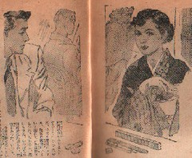

カイカイ麻雀
その家は新橋にある。かなり大きな中華料理店であった。もちろんもう深夜なのだから表は閉まっていたし、店の灯も消えていた。しかし裏口の非常階段みたいなところから僕たちが二階に上がっていったとき、すでに内部の人々のザワメキが感じられた。僕は好奇心から珍しく興奮していた。
なにかの本で読んだ記憶に「吾々の神経系統は、たえず変化ある刺激を求めてやまない。感覚を算術級数的に持続するには、刺激を幾何級数的に増大せねばならない。だから酒よりも女よりも、賭博のような、結果の変異がまったく未知数であり、しかも危険なものがこのまれるのだ」というのがあった。その夜の僕は確かに一種異様な心のトキメキで新しいスリルを楽しんでいた。
それでも竹さんは、この深夜のトバク場の顔馴染みらしく、入り口の男と二言三言なにか言葉をかわすと、
「さあ、どうぞ」と僕たちをうながした。僕たちというのは、緑一荘でやっていたままのメンバーである。
とまれ一歩中に入ってみて、僕はさらに新しい興味を覚えた。そこはかなり大きなホールで、麻雀卓にして三十卓はおいてある。なによりも男女とりまぜて部屋にあふれんばかりの人々が、或いは片隅のバーで立ち飲みしていたり、或いは一方のテーブルで歓談していたり、ちょっと香港あたりにでもありそうな妖しいナイトクラブの雰囲気をあったえていることが、僕の興味をイヤでもそそったのである。
ミミッチイ話しながら、僕は入場料だけで二，三千円取られるのではないかと心配した。が、その入場料らしきものは、一卓につき千円を負けたものが払うしきたりなのであった。
これではどんなことがあっても負けられない。僕は緊張した。さいわい僕はオジケづいてはいなかった。俗にバクチ必勝法として、一に心、二に金、三に技術、四に性質、五に力といわれるが、カンジンの一心において、僕は妙にユトリができ、必勝の信念に燃え、勝てそうな気がしてきた。
ルールは千点千円。それにいささか違う点は、イーソウを１枚持っていると、勝ち負けを別にして二百円のプレミアがつくことである。で、イーソウをカンでもしようものなら、それで八百円、ヘタ安アガリした者から逆に貰えることにもなった。言い忘れたが、ここでは点棒というものが一切なくて、いちいち現金で支払うのだ。これは意外なほどバクチに迫力が加わった。この道では、こうした麻雀を「カイカイ麻雀」というのだそうだ。
そうしてカイカイ麻雀は１回毎の交代が可能なのである。もし負けた者がちょっとでもイヤ気がさしたり、運を立て直すために一回でも二回でも休もうと思えば、見物人の一人とかわっていいことになっている。あるいは見物人の中で、ゼヒ次の１回やってみようと思えば、前回最下点の者と代わる権利があった。
見物人と言えば、僕たちがゲームを開始したときから、約十人ほどがぐるりとうしろに立って、思い思いに「乗り賭け」をやっていたのである。つまり僕たち四人のうちの、うまそうな奴に金を張る二重バクチだ。
その見物人の一人に女がいた。そして彼女は終始、僕にばかりハるのだった。やっぱり気にならざるをえない。さいわいふしぎと僕はツイていた。したがって彼女は、他の見物人の金を相当に巻きあげたものである。そのうち僕はあることに気づいた。というのは、いつしか僕の心理の中に、彼女のために勝たねばならぬという奇妙な気持ちの負担があることだった。これは賭博者として、あるまじき心理である。じぶんのためよりも他人のために勝とうとする心理は、バクチの意味を失うにひとしい。
案の状、僕は此の気持ちの負担がかさなるにつれて、勝負がつまらなくなってきた。勝っても嬉しくなくなってきたのである。すでに僕の資本金の八千円は、そのまた倍近くにふくれあがっていたが、僕はヘンに味気なくなっていた。それなのに、なおも僕にハリ続けている彼女を意識する。彼女には、そんなふうな妙な引力みたいなものがあったのだ。
が、僕はもはや、彼女を憎んでいた。勝負の味を薄められたようで、イヤな奴だと邪魔にしていた。しかもなお、依然として彼女は僕にハる。僕は露骨にイヤな顔さえしてみせた。なにも彼女ばかりが僕にハるわけではなく、他の見物人だってたまには僕にカケるのだが、ますます僕は、彼女ばかりをシャクの種にしていた。いまや実にナゲヤリなゲームをするにいたったのである。
こうなると勝負の神様は正直なもので、とたんに僕を見放した。ハンチャンもイーチャンもない。えんえんと続く麻雀の、何十回めで僕はラストとなり、しかも五割り増しマンガン六千円を振り込んだのである。このとき、
「さんざ勝たしてもらったけど、これでもうこの人ダメだわ。さてこんどはアッチに賭けようかな」と彼女がいったのだ。
僕はカッとなった。鬱屈していたシャクのタネが、彼女の放言によって一時に爆発したかのよう頬の筋肉をブルブルふるわせ、思わず僕は、
「ダメになったかどうか、ノってばかりいないで、僕と勝負したらどうです。マージャンしましょう。マージャンを」と呼ぶように彼女を睨んだのだった。瞬間彼女はアキレタような顔つきをしたが、すぐ平静な表情に戻って
「ホホホホ・・・・ええ、いいわ」と光る目でうなづいた。
「ヨシッ！」と僕も低く力をこめ、決闘でもする気構えで彼女に視線を通したのだが、このとき初めてマジマジとみた彼女の美しさに、僕はまた特別な戦慄をおぼえたのだった。和服姿ながら、固肥りの上品な官能の匂う中年女は、むろん処女ではあるまいが、かといって人妻でもない一種のきびしさをもっていた。僕は誘惑と幻惑を同時に感じた。

|